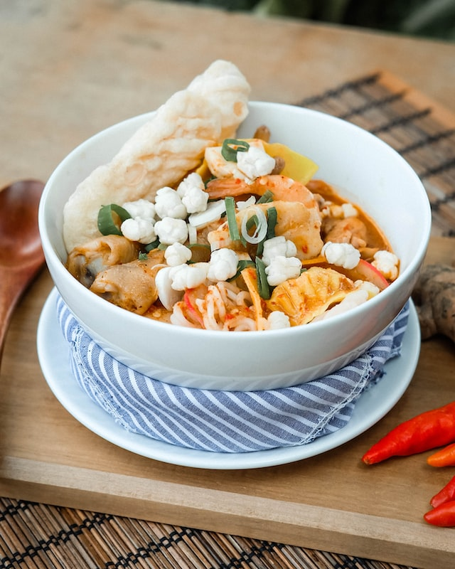

SECRET RECIPE OF SEBLAK FROM INDONESIA

Description
Ini adalah seblak yang menjadi makanan favorit anak muda
Ingredients
- Mie instan
- Kerupuk
- Ceker ayam
- Cabai merah
- Telur
- Sosis
- Bakso
Steps
- Masak mie instannya
- Rebus kerupuk selama dua menit
- Masukkan kerupuk ke dalam wajan berisi mie
- Masukkan sosis dan bakso
- Masukkan ceker ayam
- Masukkan cabai merah
- Masukkan telur
- Aduk hingga merata
See other recipes